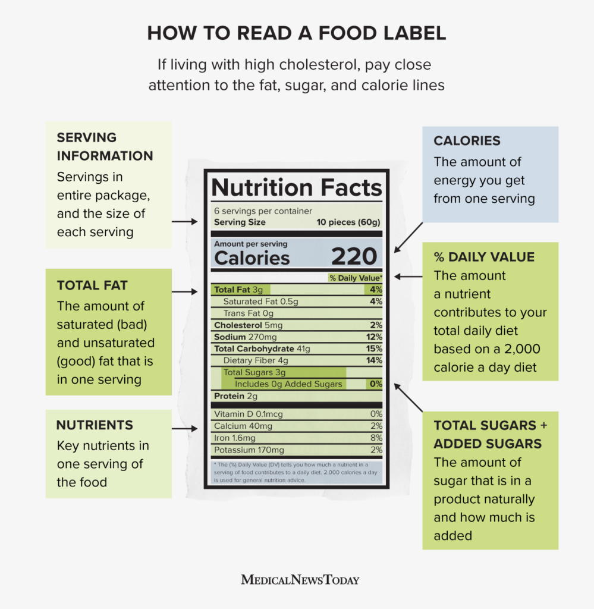

Master the Basics of Nutrition
Nutrition is the sum of all processes involved in the intake, assimilation, and utilization of the proper amounts of nutrients to maintain health, well-being, and productivity. Good nutrition relies on a diverse, adequate diet and is essential for the development and maintenance of the body from infancy to old age. Nutritional status can be both the “cause” and the “outcome” of good or poor health. The terms “nutrition” and “food” are closely related but not interchangeable. Nutrition is a process of events, while food is a product that is eaten or taken into the body. Food is essential because it contains nutrients that the body needs for the following:
- Developing, growing, maintaining, replacing, and repairing cells and tissues
- Resisting and fighting infection and recovering from illness
- Producing energy, warmth, movement, and work
- Carrying out chemical processes such as digestion
Meal Planning and Preparation:
- Weekly Meal Prep: Strategies for planning and preparing meals in advance to save time and eat healthier.
- Smart Shopping Tips: How to choose fresh, seasonal, and whole foods at the grocery store.
- Budget-Friendly Eating: Tips for eating healthy on a budget.
- Balanced Meals: Tips for creating meals that include a mix of protein, carbs, and fats.
- Portion Control: How to manage portion sizes to prevent overeating.
- Mindful Eating: Techniques for paying attention to hunger and fullness cues.
Healthy Eating Guidelines:

The Importance in Reading The Food labels
Nutrition labels give information about calories, serving sizes, and nutrients. Understanding what labels mean can help people choose foods and drinks to support a healthy weight and reduce the risk of diseases.
Nutrition labels are food information sources on packaging that inform consumers about what they are eating. They detail nutrients in the food or beverage and how this compares with what the government recommends people consume daily. The United States Food and Drug Administration (FDA)Trusted Source prioritizes nutrition initiatives as part of a national strategy to end hunger and increase healthy eating and physical activity. The new nutrition facts labelsTrusted Source include calories, serving sizes, and more details as part of the initiative. Nutrition labels help consumers to make quick, informed choices of what to eat as part of a healthy diet.